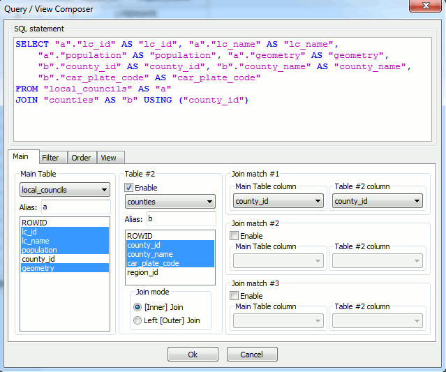
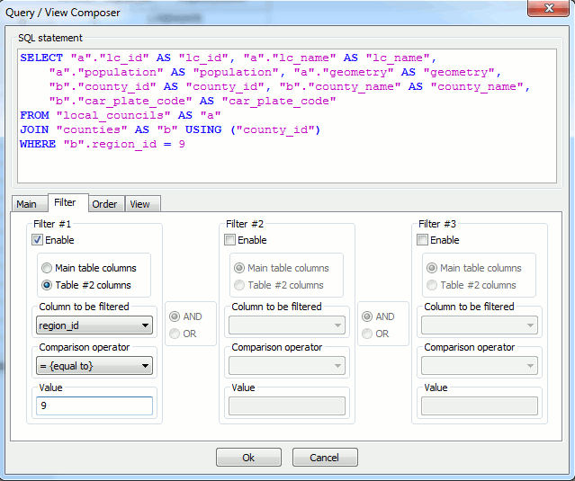
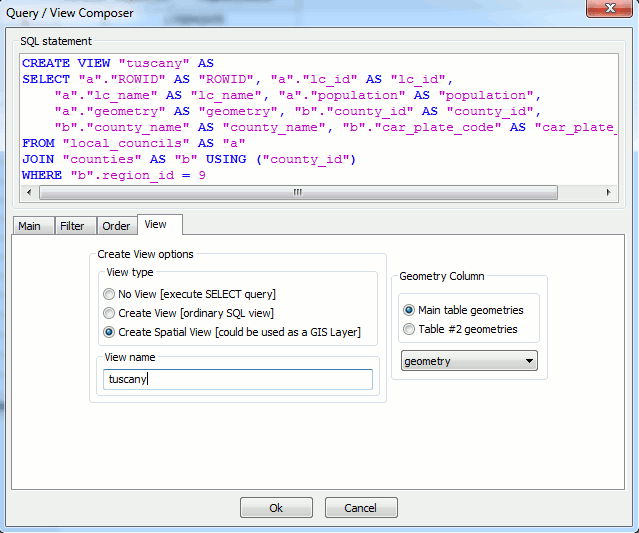
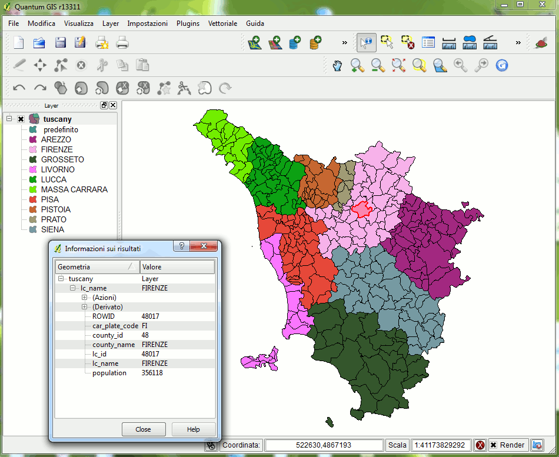

"font-size: 32pt">recipe #20
Spatial Views
"HTML Tidy for HTML5 for Linux version 5.6.0" />
|
"font-size: 32pt">recipe #20 |
| 2011 January 28 |
| Next |
| SpatiaLite supports
Spatial Views: any properly defined Spatial View can then be used as any other map layer, i.e. can be displayed using QGIS . "Courier New, monospace">VIEW can only be accessed in read-mode ( "Courier New, monospace">SELECT); (no INSERT, DELETE or UPDATE are supported). |
Using
the query composer tool
spatialite_gui supports a query composer tool; in this first example
we'll use exactly this one.

Step 1: selecting the required tables and columns,
and defining the corresponding
"Courier New, monospace">JOIN condition.
In this first example we'll
"Courier New, monospace">JOIN the
"Courier New, monospace">local_councils and the
counties
tables.

Step 2: now we'll set an appropriate
filter clause;
in this case only
"Courier New, monospace">local_councils and
counties belonging to Tuscany Region (
"Courier New, monospace">region_id = 9) will be
extracted.

Step 3: and finally we'll set an appropriate
VIEW name: during
this latest phase we'll select the Geometry column corresponding to
this VIEW.

We are now able to display this Spatial View using QGIS (an
appropriate thematic rendering was applied so to
evidentiate Counties).
"font-size: 20pt">Hand-writing your own Spatial
VIEW
CREATE
VIEW italy AS r.region_id); |
tool.
You are absolutely free to define any arbitrary VIEW to be used as
a Spatial View.
INSERT
INTO views_geometry_columns f_table_name, f_geometry_column) 'local_councils', 'geometry'); |
"Courier New, monospace">VIEW into the
"Courier New, monospace">views_geometry_columns, so
to make it become a real Spatial View.
SELECT
* FROM views_geometry_columns; |
| view_name | view_geometry | view_rowid | f_table_name | f_geometry_column |
| tuscany | geometry | ROWID | local_councils | geometry |
| italy | geometry | ROWID | local_councils | geometry |
appropriate thematic rendering was applied so to evidentiate
Regions).
| Next |

"CC-BY-SA logo" /> |
Author: Alessandro Furieri |
| This work is licensed under the
"http://creativecommons.org/licenses/by-sa/3.0/">Attribution-ShareAlike 3.0 Unported (CC BY-SA 3.0) license. |
|
|
|
|
 |
Permission is granted to copy, distribute and/or modify this
document under the terms of the Documentation License, Version 1.3 or any later version published by the Free Software Foundation; Texts. |